Разновидности кинжалов
Один из верных способов убить или ранить противника — нанести ему колющий удар. Кинжал является простейшим колющим оружием. Он имеет короткий клинок и удерживается одной рукой. В первую очередь служит для нанесения колющих ударов, но многими из кинжалов можно резать как хозяйственным ножом. Один из основных типов оружия, кинжал известен во всех частях света и используется с эпохи каменного века.
Формы клинков. Для нанесения колющего удара кинжалы обычно имеют суживающийся клинок, часто обоюдоострый. Разнообразие очертаний клинка очень велико. Некоторые стали традиционными для определенных районов, другие диктуются материалом изготовления. Здесь показаны лишь главные типы.
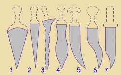
- Широкий треугольный клинок, такая форма компенсировала мягкость металла.
- Узкий треугольный клинок, идеальный для кинжала.
- Асимметричный малайский крис. Клинок не всегда волнистый.
- Тяжелый листовидный клинок.
- Изогнутая арабская джамбия.
- Дважды изогнутый клинок. Распространен в Индии и Персии.
- Клинок в форме боуи. Спинка срезана, чтобы конец можно было сделать обоюдоострым.
Сечения клинков. Разнообразные формы сечения показывают, как человек пытался получить возможно более жесткий клинок при его возможно меньшей толщине.
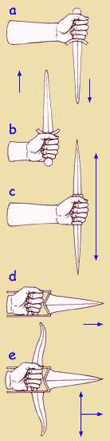
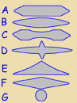
- Параллельные плоскости создают самый слабый, гибкий клинок.
- Клинки с выпуклыми или
- вогнутыми, c желобками сторонами более жесткие, так же, как и
- ребристые,
- трехгранные и
- ромбические.
- Шилообразный клинок без режущих краев применялся только для колющего удара.
Захват и направление удара (справа). Обычное положение — лезвие кинжала под мизинцем (a), так как удар сверху вниз наиболее сильный. Большинство кинжалов можно держать острием вверх (b), некоторые позволяют наносить удары в обоих направлениях (c). Другие, как индийский катар, предназначены для удара вперед (d). Существуют катары, которыми можно действовать в трех направлениях (e).
Способы применения. Чаще всего кинжал применяют для самозащиты или скрытого нападения. Его можно быстро выхватить и легко спрятать. Если его открыто повесить на поясе, кинжал служит украшением. В затянувшемся поединке он часто использовался для завершения боя, особенно если ограниченное пространство препятствовало применению оружия с длинным клинком. Специальные кинжалы использовались в религиозных обрядах и ритуальных жертвоприношениях.
Неметаллические кинжалы
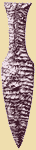
Неметаллические кинжалы — менее надежное оружие, чем кинжалы из металла. Камень, даже твердый, крошится; другие широко распространенные материалы — кость, рог и дерево — пригодны для изготовления острия, но не лезвия. Поэтому всегда, когда это возможно, кинжалы предпочитали изготавливать из металла. Исключение — кинжалы для ритуальных целей.
В мире существует большое многообразие форм рукоятей и клинков. В основном они определяются назначением кинжала, 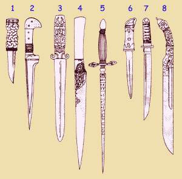способом его ношения и уровнем технического развития общества. Длина кинжалов может быть от 15 до 50 см, самые длинные приближаются к коротким мечам.
Кинжалы с прямым клинком (слева)
- Скин ду, шотландский кинжал, который носили за голенищем. Головку рукояти часто украшали полудрагоценным камнем.
- Пеш-кабз, распространенный в Персии и Северной Индии кинжал. Клинок Т-образного сечения был предназначен для пробивания кольчуги.
- Бронзовый китайский кинжал эпохи династии Чжоу. 600—500 гг. до н.э. Цельная конструкция с полой ажурной рукоятью.
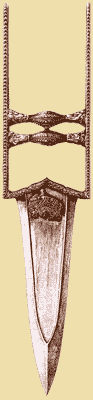
- Кард, персидский однолезвийный нож с золотой насечкой. XVII век.
- Фузетто, многоцелевой стилет итальянских артиллеристов. Применялся для измерения диаметра канала ствола и ядра, для чистки запального отверстия и для прокалывания зарядного картуза. Обычно имел в сечении равнобедренный треугольник. XVII-XVIII вв.
- Квайкен, японский женский кинжал. Изображенный экземпляр имеет двухлезвийный клинок, существуют однолезвийные. Использовался для обрядового самоубийства путем вскрытия вен на шее.
- Танто, однолезвийный японский кинжал с маленькой гардой. Разновидности хами-даши и айкучи различаются только присутствием или отсутствием этой рудиментарной гарды.
- Пиха-каетта, кинжал из Шри-Ланки. Формой напоминает боуи, обоюдоострый на конце и тяжелый, будто для рубки. Часто покрыт гравировкой и инкрустирован серебром и латунью.
Катар (справа), толчковый кинжал из Индии. Снабженный двумя близко посаженными рукоятями и длинными хвостовиками, которые идут вдоль обеих сторон запястья и предплечья, он позволял наносить самый мощный удар. Острие иногда усиливали для пробивания кольчуги.
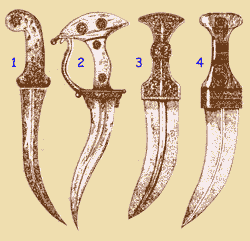
Кинжалы с изогнутым клинком (слева)
- Кханджар, кинжал из Индии и Персии. Этот тип выделяется скорее своей пистолетной рукоятью из нефрита или слоновой кости, чем формой клинка, который может быть загнут вперед или назад, а также может иметь двойной изгиб, как у кханджарли.
- Кханджарли, индийский кинжал с двойным изгибом двухлезвийного клинка и характерной головкой в форме полумесяца. Не все экземпляры имеют гарду.
- Индийский кинжал со стальным клинком в форме джамбии и позолоченной металлической рукоятью.
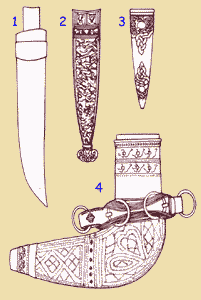
- Джамбия, арабский кинжал, встречающийся во многих вариантах. Все они имеют изогнутый обоюдоострый клинок, обычно с ребром для повышения жесткости. Этот образец из Маската (Оман).
Ножны (справа) Показаны широко распространенные типы.
- Непальские деревянные ножны, обтянутые кожей, — известная во многих странах конструкция.
- Деревянные ножны с ажурными позолоченными медными накладками. Для накладок применялись и другие металлы. Швейцария, XVI в.
- Кожаные ножны в металлической оправе для шотландского скин ду — еще одна расхожая конструкция.
- Деревянные ножны для арабской джамбии, покрытые тонким металлом, легкие и прочные.
Места ношения кинжалов.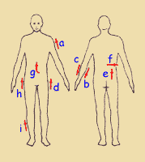
- Плечо (Судан)
- Внутренняя сторона предплечья (Сахара)
- Внешняя сторона предплечья (британские коммандос)
- Левое бедро
- Правая ягодица, вертикально
- Талия, на спине, горизонтально
- Спереди по центру (арабы)
- Правое бедро
- Голень
Европейские кинжалы
Развитие форм кинжалов в Европе происходило не столько по логике технического прогресса, сколько под влиянием веяний моды. Преимущества черешка во всю длину рукояти или цельной конструкции были осознаны уже в бронзовом веке. С этого времени традиционные типы то и дело модифицировались ради специфических задач, например требовались кинжалы для дуэли или для поражения противника в местах сочленения лат.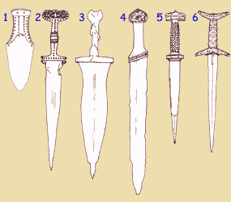
Древние и средневековые кинжалы (слева)
- Короткий бронзовый кинжал с широким клинком. Такие кинжалы часто находят в могильниках бронзового века Англии. Йоркшир. 2000-1600 гг. до н.э.
- Антеннендольх гальштатской культуры железного века. Центральная Европа. Около 500 г. до н.э. На Ближнем Востоке железо начали использовать примерно с 3000 г. до н.э. Крепость клинков возросла с открытием стали приблизительно в 1500 г. до н.э.
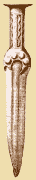
- Пугио, кинжал римских легионеров. Около 100 г. Короткая версия меча гладиус.
- Скрамасакс, железный кинжал франков и саксов. Около 550 г.
- Кинжал с шайбами — рондель, шайбендольх. Средневековый тип кинжала с головкой и гардой в форме дисков. Клинок обычно очень узкий, в сечении имел разные формы. 1320-1550 гг.
- Баселард, средневековый кинжал с крестообразными головкой и гардой. Клинок чаще всего узкий и обоюдоострый. 1300-1500 гг.
Строение кинжала (справа).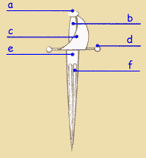
- Европейский кинжал состоит из следующих главных частей (некоторые из них могут отсутствовать):
- Головка
- Рукоять
- Щиток гарды
- Выступы гарды
- Тупая часть клинка — пята (рикассо)
- Желобки (долы)
В средние века кинжал носили представители всех слоев общества. Он служил для самообороны, был столовым прибором и украшением. В Испании и Италии получили распространение кинжалы для левой руки, которые помогали отражать удары противника при фехтовании. В XVI в. кинжал как принадлежность костюма начал уступать место шпаге.
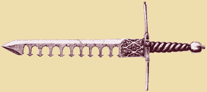
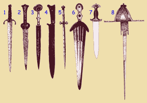
Позднесредневековые кинжалы (справа)
- Кинжал квилон. Имеет несколько вариантов. Все они с двумя выступами гарды. Бытовал в 1250—1500 гг., позднее использовался как кинжал для левой руки.
- «Почечный» кинжал, свое название получил от формы гарды. Был распространен в 1300-1600 гг. Здесь представлен образец конца XIV в.
- «Ушастый» кинжал, свое имя получил от двух дисков, образующих головку. Обычно богато украшен. 1400—1550 гг. Это экземпляр XV в. из Италии.
- Хаусвер, крестьянский нож. Многоцелевое оружие, обычно однолезвийное. Швейцария. XVI в.
- Стилет, чисто колющее оружие без лезвий. В XVII— XVIII вв. был широко распространен в Италии. Клинок в сечении квадратный или прямоугольный. Изображен экземпляр начала XVII в.
- Чинкведеа, что означает «пять пальцев» — приблизительная ширина клинка в основании. Тяжелое цивильное оружие, которое носили втайне, за спиной. Италия. Около 1500 г.
- Кинжал гольбейн. Современное название формы, популярной в Швейцарии. В 1930-е гг. она была скопирована нацистами для форменного кинжала. Данный экземпляр середины XVI в. из Швейцарии.
- Маин гауче, дага, кинжал для левой руки. Здесь представлена его развитая форма с ажурным треугольным щитком гарды. Использовался в паре с рапирой на дуэлях. Испания. Около 1650 г.
- Средиземноморский кинжал. Формой похож на обычный столовый нож, гарда отсутствует. Италия. Конец XVIII в.
честно спыжжено с какого-то москальского сайта... давно...